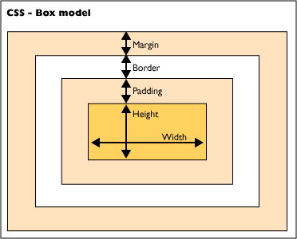

Understanding the CSS Box Model
December 19, 2015
Introducing the Box Model
The box model is how most web browsers interpret HTML elements in terms of spacing and layout. In fact, any HTML element can be considered a box. Each box has four main properties. They are margin, border, padding, and content.
Margin
Margin is the space in the box furthest from the content. The space itself is completely transparent, it will show the element behind it. One important concept of margins is that they are shared. If you have two HTML elements next to each other with a margin of 20 pixels, they will be 20 pixels apart.
Border
The border outlines the visible portion of the content. A border should include a line size, type, and color. An example of this would be border: 2px dashed red;.
Padding
Padding is the space between the content and the border. Unlike margin, padding will take on the properties of the element, and is not shared space.
Content
The content itself will streatch to the size required in order to house the information contained. Otherwise, content dimensions can be specified using the width and height properties.
Syntax and Shorthand
You can define the margin and padding of the object in a couple of different ways. The first is to define each side on its own. In this case, your code would look like this:
padding-left: 5px;
padding-right: 5px;
padding-top: 5px;
padding-bottom: 5px;
If all sides are to have the same size padding or margin, you could simply define the value by using the shorthand:
padding: 0;
If the top and bottom had a padding of 5, and the left and right had a padding of 2, you could use the shorthand:
padding: 5 2;
Lastly, shorhand for all sides is clockwise, starting with the top. It is demonstrated like this:
padding: 5 2 5 2;
Although my example is shown only using padding, the same method works for margins and borders as well.
Size of the Element
Now that we have an understanding of the box model and its properties, lets discuss the actual size of the element. First, lets create a theorecital box.
.box {
height: 200px;
width:400px;
padding:20px 10px;
margin: 40px;
border: 2px solid black;
}
In order to determine the width, you must add the width of the content, the padding-right, padding-left, border multiplied by two, margin-left, and margin-right. The same concept applies to the height. In this case, the box would have a width of 504 pixels, and a height of 324 pixels.